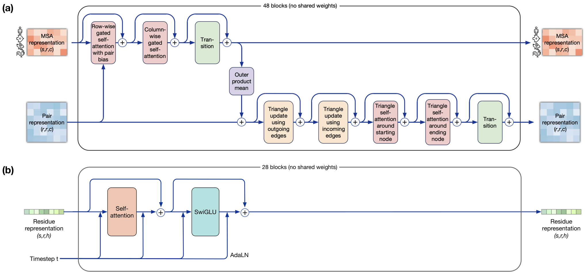
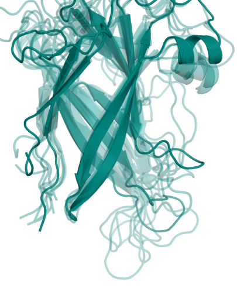

Transthyretin carries thyroid hormone in the blood.
When it loses its shape it clumps into amyloid fibrils: heart and nerve disease.
The drug tafamidis works by holding the shape together.
Search databases for the same protein in other species. Positions that mutate together are probably touching.
Keep a feature for every pair of residues: an N × N table, updated through the whole network.
Update pair (i, j) by looking at every third residue k, so the distances stay geometrically consistent.
For a protein of N = 1,000 residues
Every box is the same standard transformer block. The timestep t enters each block through adaptive LayerNorm, as in image diffusion transformers (DiT). Next slide.
t sets scale, shift and gate in every block. Gates start at zero, so each block starts as the identity.
Normalize queries and keys so attention logits can't blow up. Keeps big models stable.
A gated feed-forward layer: better quality for the same compute.
Position as a rotation of q and k. Atom layers use 4 axes: a 3D reference shape plus the residue index.
Predictions kept only when the predicting model was confident (high pLDDT).


Same sequence, different starting noise, different conformations. Proteins move, and a regression model can only give one answer.
Best reported result on the apo/holo two-state benchmark.
30× the parameters, 22× less compute.
The 100M model folds a 512-residue protein in ~9 s on a MacBook.
A general transformer, a flow-matching objective and a lot of data get within a few percent of AlphaFold2, with none of its special parts and a fraction of the compute.
Questions?